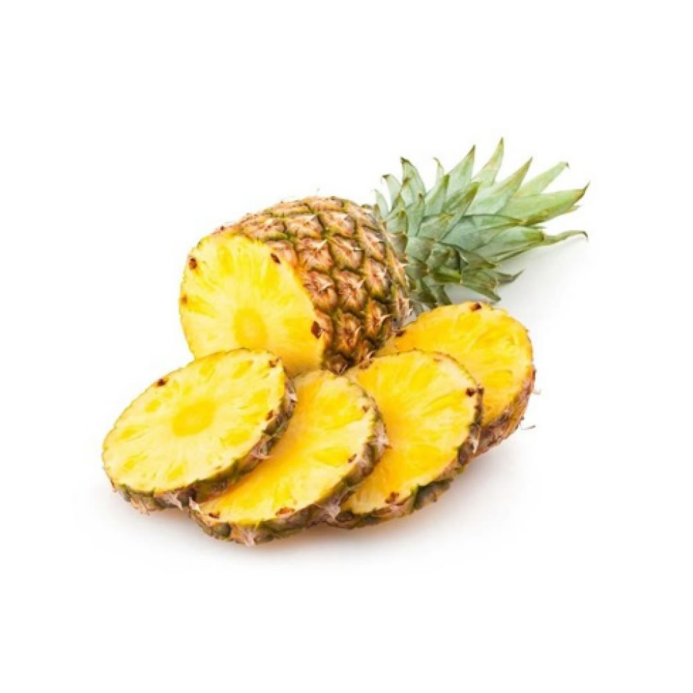
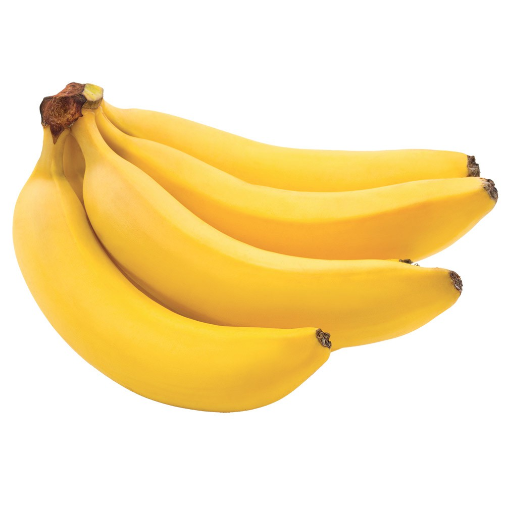
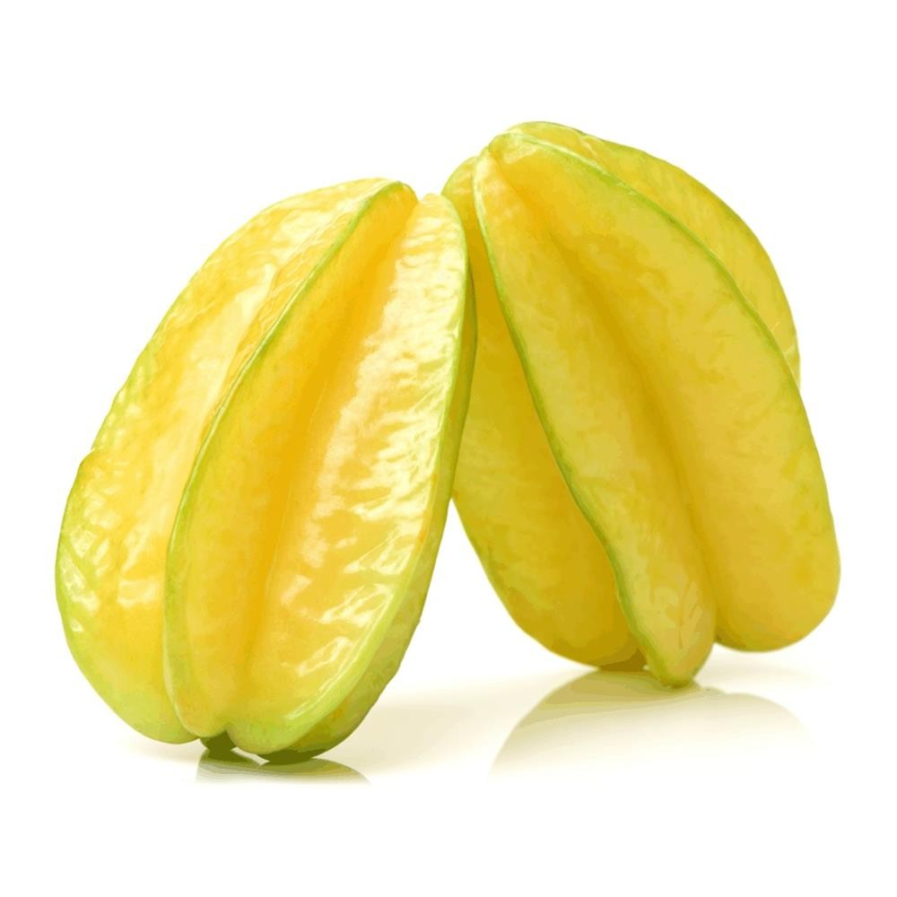
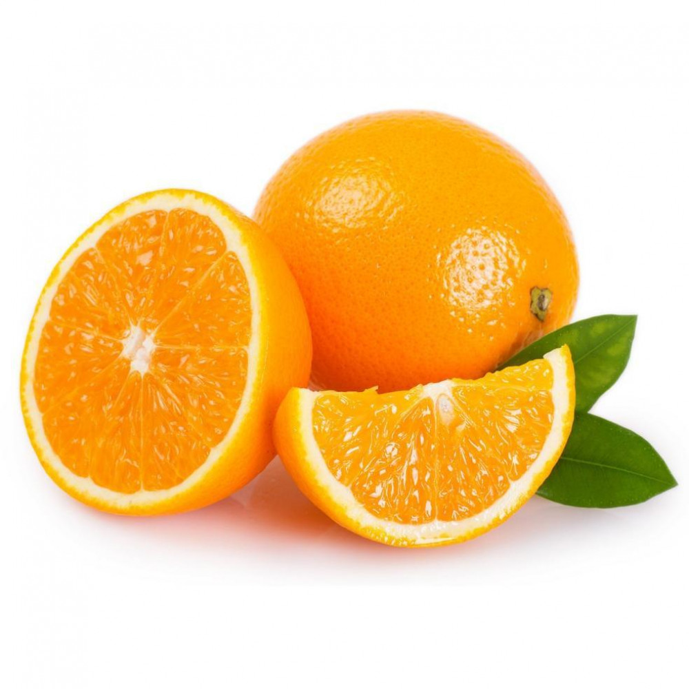
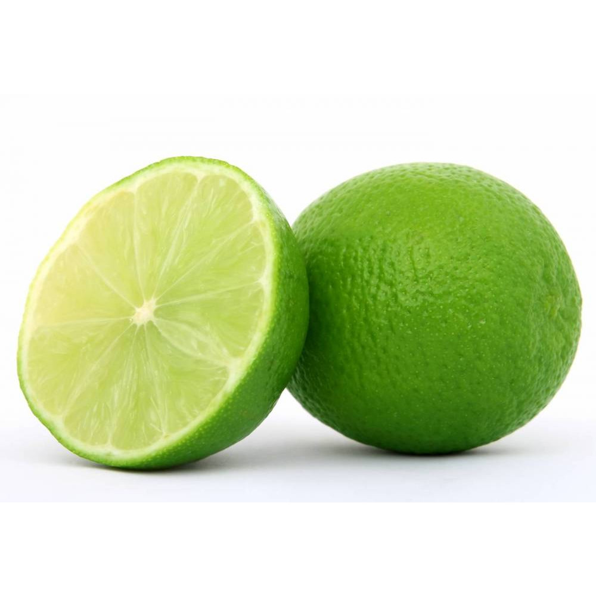
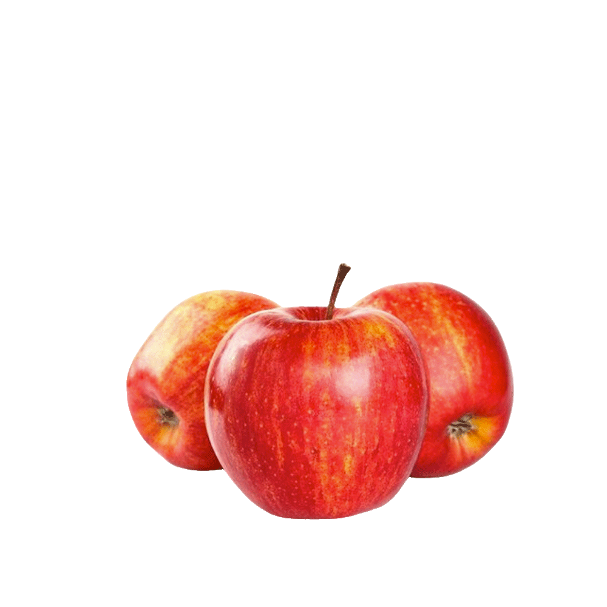
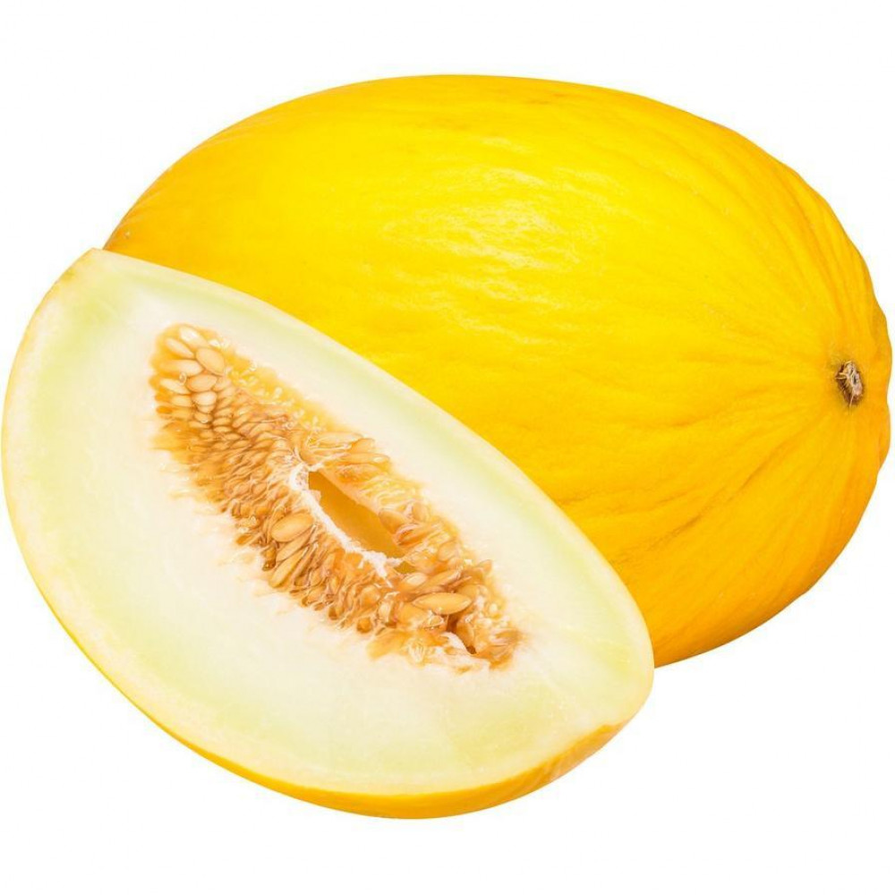
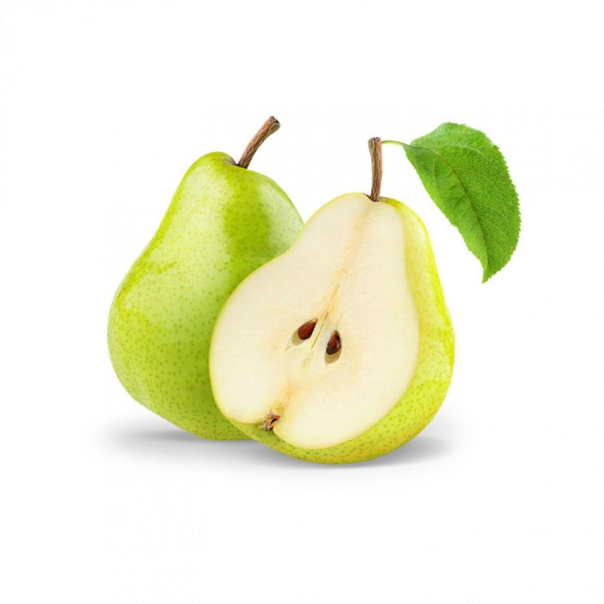
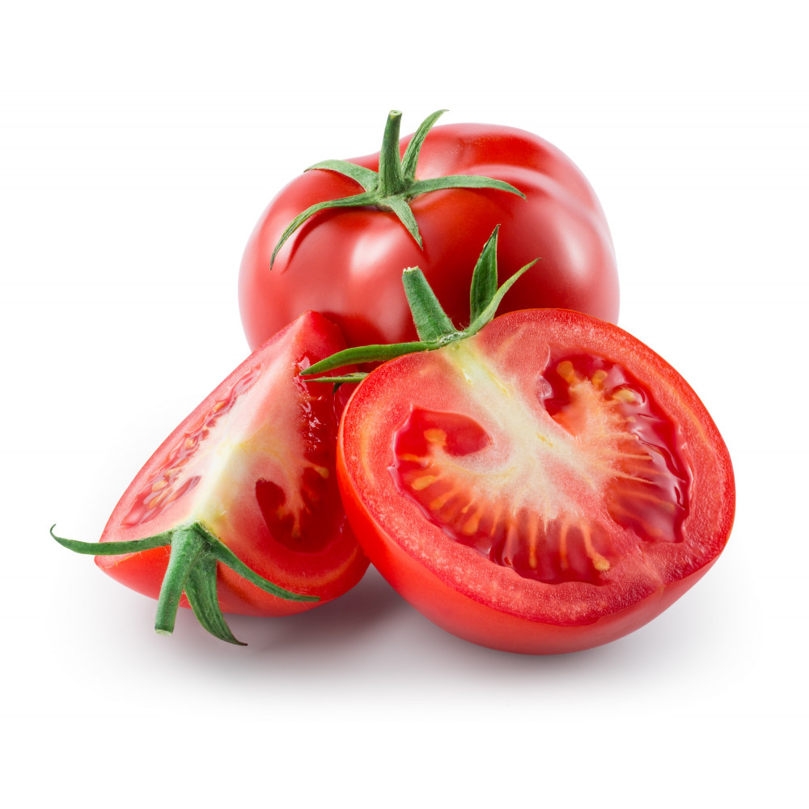

| Foto |
Descrição |
Preço (R$) |
Quantidade disponível |
|  |
O abacaxi é um fruto revestido por uma casca áspera, formada pela união das brácteas e sépalas das flores da planta. Devido ao fato da casca da fruta ser áspera e espinhosa, é comum na gíria brasileira o emprego da expressão “descascar um abacaxi” para designar a resolução de um problema ou situação difícil. |
R$8,99 (Un) |
15 |
|  |
Entre todas as frutas, a banana é uma das mais conhecidas e consumidas em todo mundo. Ao lado do arroz, trigo e milho, ela é um dos produtos alimentares mais produzidos. |
R$4,99 (Kg) |
13 |
|  |
A carambola, conhecida cientificamente por Averrhoa carambola, é uma fruta exótica, com ótimas quantidades de antioxidantes, como flavonoides, vitamina C, ácido gálico e epicatequina, que ajudam na prevenção de problemas de saúde, como infarto, diabetes, derrame e aterosclerose. |
R$6,99 (Kg) |
36 |
|  |
A laranja é o fruto da laranjeira, árvore da família Rutaceae. O interior da laranja é formado por gomos, cujo sabor varia do doce ao levemente ácido. É uma fruta rica em vitamina C, sais minerais como ferro, potássio, cálcio. O formato e a cor da fruta variam de acordo com a espécie. |
R$2,99 (Kg) |
75 |
|  |
O limão é o fruto do limoeiro e é empregado no combate de diversas doenças, pois é rico em vitaminas e sais minerais. O limão (Citrus x limon) é o fruto do limoeiro, uma árvore típica da região sudeste da Ásia. |
R$1,99 (Kg) |
90 |
|  |
Maçã, fruto da macieira, é uma das frutas mais consumidas em todo o mundo, considerada a “rainha das frutas européias”. De fato, a fruta tem sido ao longo de milhares de anos, um alimento com bons valores nutritivos, sendo consumida principalmente na Ásia, Europa e Estados Unidos, uma vez que a maçã é típica de climas temperados. |
R$5,99 (Kg) |
45 |
 |
A melancia é uma fruta rasteira originária da África, pertence à família das cucurbitáceas. Pode apresentar formato arredondado ou alongado e seu tamanho varia ente 25 e 75 cm.
De polpa vermelha, doce e com alto teor de água (cerca de 90%), a melancia é uma fruta refrescante e muito consumida no verão, como sobremesa. |
R$11,99 (Kg) |
7 |
|  |
Melão é a fruta do meloeiro, planta pertencente à mesma família da melancia e do pepino. É originário da África e da Ásia, suas variedades são inúmeras, sendo que todas apresentam frutos de forma esférica, casca espessa, polpa carnosa e suculenta. Algumas de suas características como a cor, a textura da casca, a cor e o sabor da polpa dependem do cultivar. |
R$8,99 (Kg) |
17 |
|  |
É uma fruta que fornece nutrientes importantes para a saúde como vitamina A, E, C, fibras, potássio, magnésio e cálcio. Além disso, as peras contêm carotenoides e flavonoides, que são compostos antioxidantes que oferecem vários benefícios à saúde. Ela é pouco calórica, uma unidade média contém apenas 54 kcal. |
R$2,99 (Kg) |
40 |
|  |
O tomate, fruto do tomateiro (Solanum lycopersicum), é um dos frutos mais consumidos em todo o mundo. O mesmo é originário da América do Sul, mais especificamente da região que vai do norte do Chile até a Colômbia. Sabe-se que grandes quantidades de tomates selvagens eram cultivadas na civilização inca, região do atual Peru. Ao contrário do que alguns consideram, o tomate não é um legume, mas sim, um fruto, uma vez que é produto do desenvolvimento do ovário e do óvulo da flor. |
R$6,99 (Kg) |
55 |